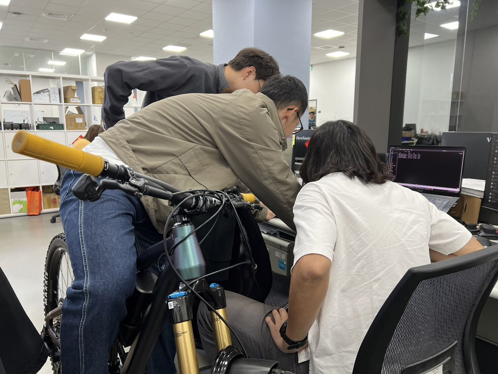
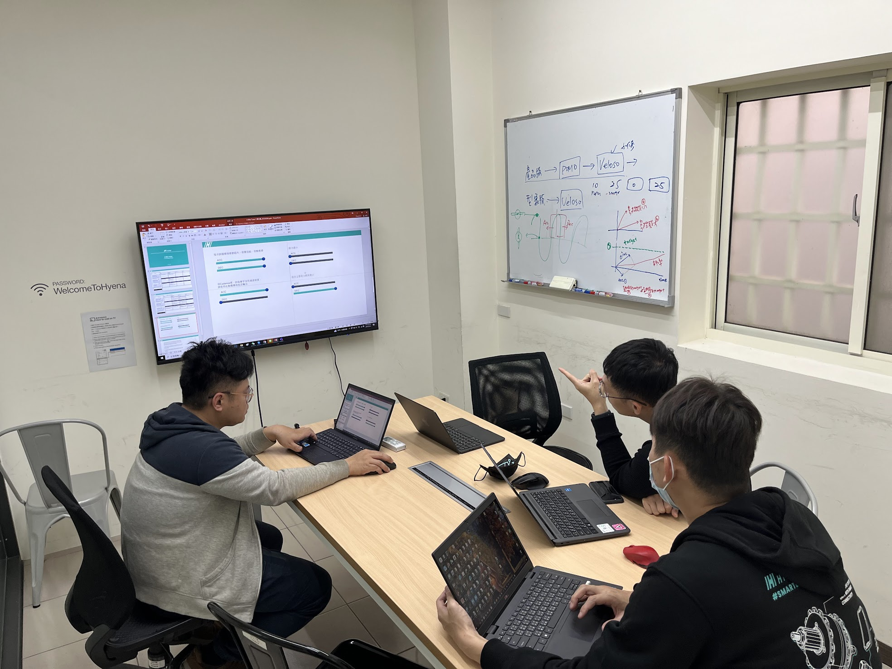
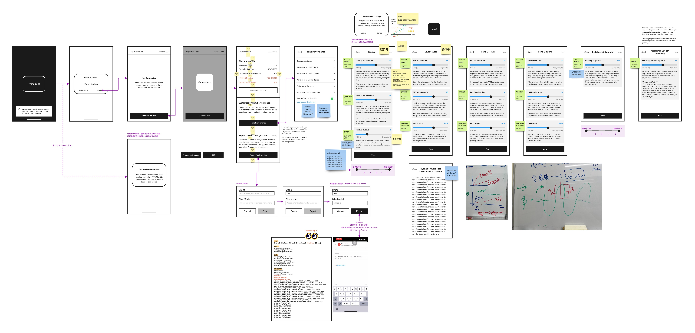
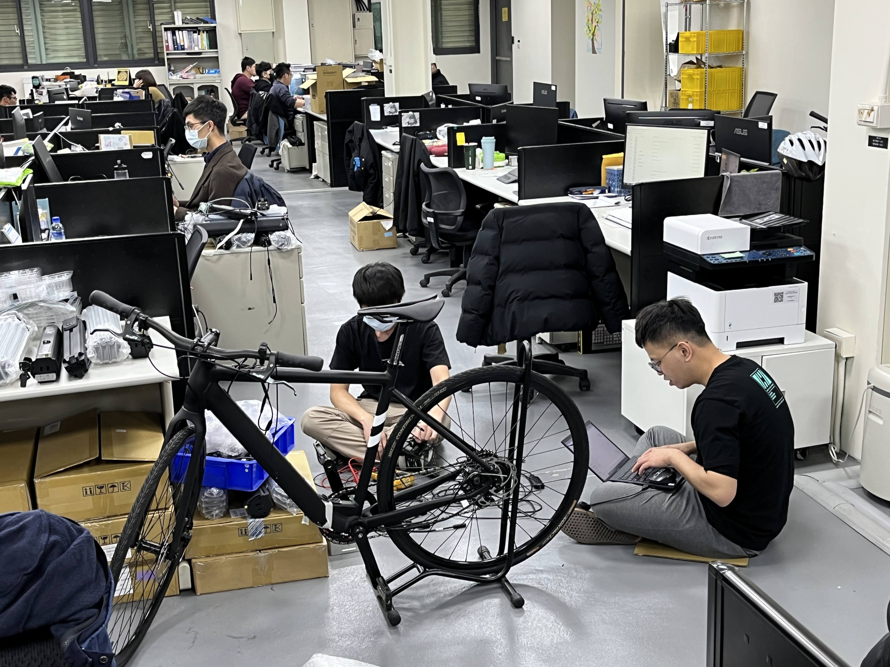
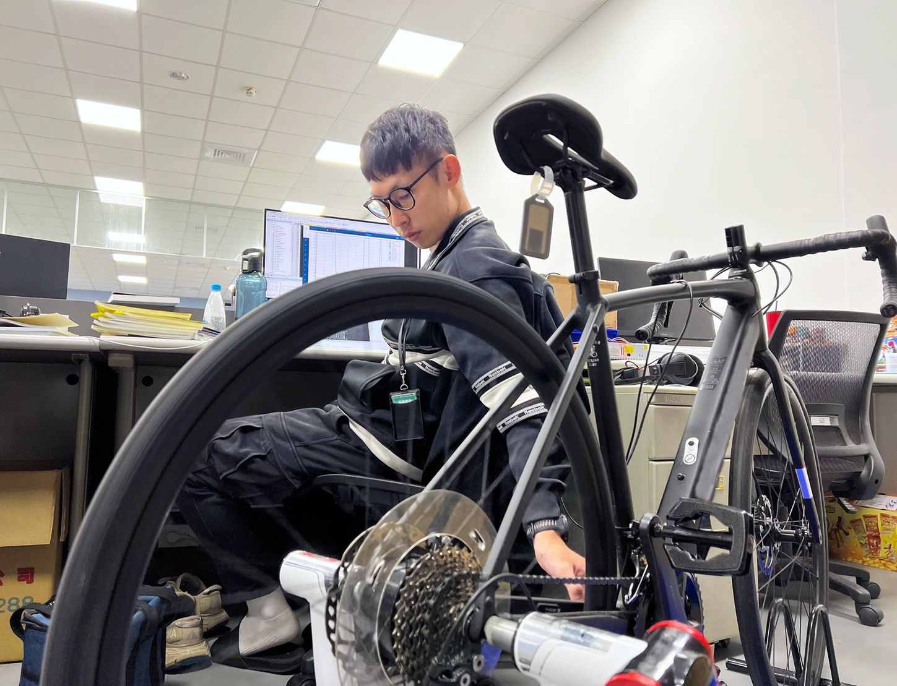
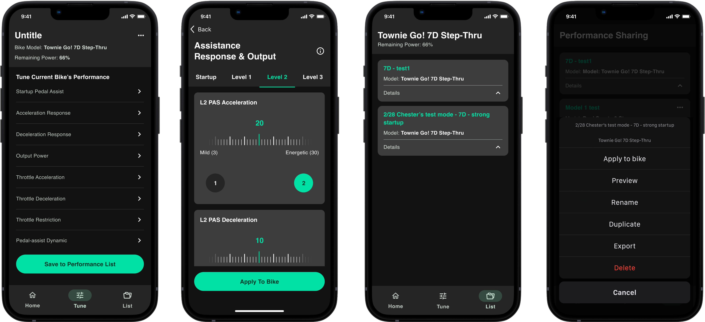

E-Bike Tuning Tool
DURATION
Mar 2022 to Oct 2024
MY ROLE
Product Manager & UI/UX Designer
TEAM STRUCTURE
Software, Firmware, Hardware, Marketing, Sales, After-Sales
PRODUCT STATUS
Launched, iteration ongoing
PLATFORM
iOS mobile app
TOOLS
Notion / Amplitude / Miro / Figma
KEY RESULTS
- Reduced development communication time from about 15 days ➝ 3 days .
- Secured collaborations with customers, increased our partnerships from 1 ➝ 10 brand clients .
- Save the company about US$30,000 in costs.
About Hyena E-Bike Tuner
E-Bike Tuning Tool is a tool and designed expressly for e-bike engineers and brands to access Hyena drive system-powered e-bikes' firmware configurations to customize the unique performances.
It solves the inconvenience when engineers can only use laptops to configure the riding feeling, and saves the communication time between engineers and clients in the past. Through the Hyena E-Bike Tuner, it’s easier for clients and engineers to customize the riding experience of e-bikes.
My Roles
As a Product Manager
1. Define Product Strategy and Goals:
Define product strategy and goals, clarifying the needs of various stakeholders (engineers, customers, sales).
2. Conduct Competitive Analysis:
Conduct competitive analysis to confirm market demand and product positioning.
3.
Prioritize Product Features:
Prioritize product features and write Product Requirement Documents (PRD).
4.
Define the riding performance:
Define the meaning of parameters and their range and riding feel changes that are affected after the adjustment, and convert these into content that customers can understand.


As a Designer
1. Design User Experience Flows:
Design user experience flows to ensure convenience for multiple roles.
2. Wireframe and Prototyping
:
Created wireframes and interactive prototypes to visualize the user journey and interface design, ensuring a seamless user experience.
3. Create Professional UI Interfaces:
Enhance the ease of adjustment operations for engineers and customers.
4.
Usability Testing
:
Conducted usability testing sessions to gather feedback and iteratively improve the app's design, enhancing its functionality and user satisfaction.

What're the Challenges in E-Bike Tuner?
Challenge1. Ineffective Communication and Distorted Requirements
:
Customer feedback on riding experience often needs to be relayed through the company’s sales personnel to the engineers. Due to the limited technical understanding of the sales staff, this can lead to distorted requirements, resulting in multiple rounds of communication without accurately capturing the customer’s desired riding experience. This communication model typically takes at least a month or more.
Challenge2. Cumbersome Tools and Inconvenient On-Site Adjustments
:
Engineers can only use tunning tools on their laptops for adjusting the riding experience. When making adjustments on-site, they must carry their laptops and conduct tests in the field, adding operational burden and inconvenience.
Challenge3. High On-Site Adjustment Costs:
When repeated adjustments still fail to meet customer needs, it often requires sending engineers to the customer’s location for in-person tuning, further escalating the company’s adjustment costs.


What value does E-Bike Tuner bring?
1. Reduced Development Time:
After implementing Tuner, the average "communication" time decreased from about 15 days to 3 days.
2. Cost Savings:
With Tuner, the cost of business trips for engineers was reduced by about USD 30,000 for the company.
3. Secured Collaborations with Customers:
Since the launch of Tuner, we have increased our partnerships from 1 to 10 brand clients, allowing them to utilize the platform for adjusting their riding experience.

What did I learn from it?
1. The Importance of User Insights:
Through interviews with users from different roles, we discovered that the originally envisioned parameter adjustment process did not align with their daily operating habits. This prompted us to adjust the design direction early on, avoiding the risk of extensive redesign later.
2. Iterative Strategy for Design Validation:
To address the needs of multiple roles, we adopted a phased validation strategy, starting with the requirements of engineers and gradually expanding to include the needs of brands and distributors, ensuring the overall integrity of the solution.
3. Challenges in Cross-Department Communication:
In my roles as PM and Designer, I learned how to coordinate requirements and development priorities between engineering and sales, especially in balancing technical feasibility with customer expectations.